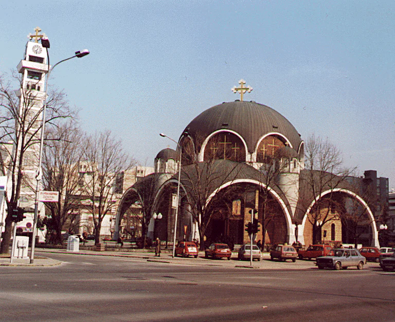
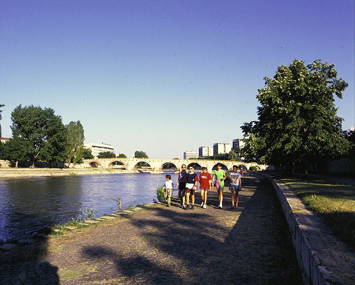
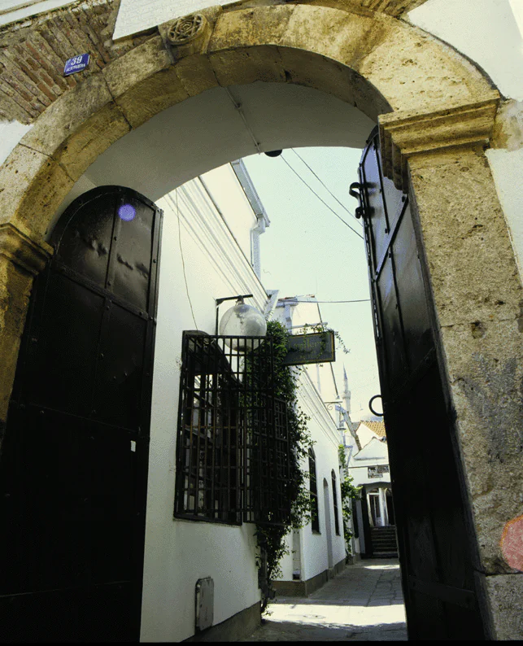
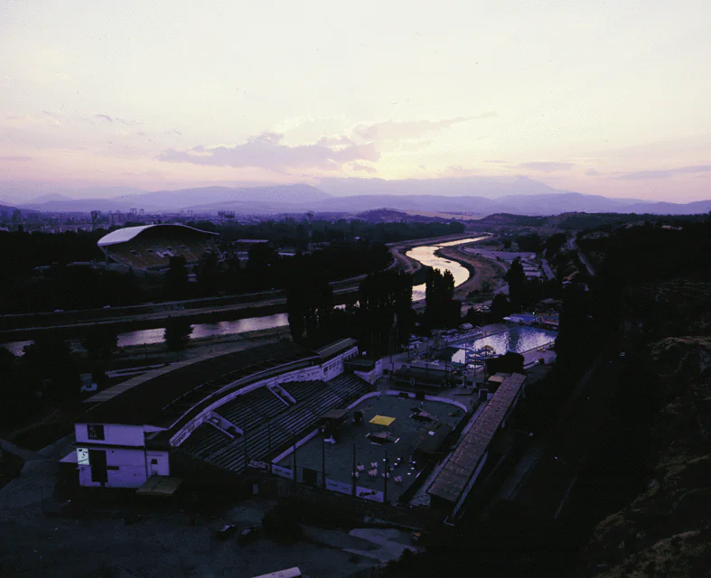
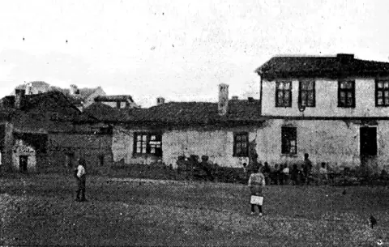

Χαμάμ του Νταούτ Πασά
- Παραγωγή
- UFUŽ και Documentary Film Prague
- Σενάριο και σκηνοθεσία
- Σλάβκο Γιανέφσκι και EMAN CANERA
- Έτος
- 1959
- Διάρκεια
- 00:08

Καθεδρικός Ναός «Άγιος Κλήμης της Αχρίδας». Στις 12 Αυγούστου 1990 πραγματοποιήθηκαν τα πανηγυρικά εγκαίνια του Καθεδρικού Ναού «Άγιος Κλήμης της Αχρίδας», παρουσία πολυάριθμου ανώτερου κλήρου με επικεφαλής τον αρχιεπίσκοπο κ. Γαβριήλ. Στην τελετή παρευρέθηκαν περίπου 80 χιλιάδες πολίτες των Σκοπίων, άλλων πόλεων της Μακεδονίας και Μακεδόνες της διασποράς (Αυστραλία, Καναδάς, ΗΠΑ και πολλές ευρωπαϊκές χώρες).


Θέα από την Πέτρινη γέφυρα προς το παλιό τμήμα της πόλης.

Ο περίπατος στη δεξιά όχθη του ποταμού Βαρδάρη.

Το φρούριο των Σκοπίων - Καλέ και ο ποταμός Βαρδάρης.

Ηλιοβασίλεμα πάνω από την παλιά Πέτρινη γέφυρα.


Πανοραμική θέα της κεντρικής περιοχής των Σκοπίων από το φρούριο των Σκοπίων - Καλέ.

Πανοραμική θέα των Σκοπίων. Στο κέντρο της εικόνας το θέατρο των Σκοπίων.

Το μέγαρο Ρίστιτς και η πλατεία.

Τμήμα της οδού «Μακεντόνιγια» προς την πλατεία.


Εμπορικό κέντρο «Μαβρόφκα»
Τμήμα του κέντρου των Σκοπίων - «Αραβικό σπίτι».

Το κτίριο της εφημερίδας «Νόβα Μακεντόνιγια».

Εμπορικό κέντρο «Μπουνιάκοβετς».

Τα παλιά επαγγέλματα επιβιώνουν ακόμη στα Σκόπια. Στη φωτογραφία ένα μαγαζί όπου κατασκευάζονται οικιακά εργαλεία. Ο τρόπος κατασκευής είναι σχεδόν ίδιος με πριν από εκατοντάδες χρόνια.

Τμήμα του Χαμάμ του Νταούτ Πασά και, στο βάθος, το κτίριο της Μακεδονικής Ραδιοτηλεόρασης.

Τμήμα της παλιάς αγοράς των Σκοπίων.

Πανόραμα των Σκοπίων προς τα βορειοδυτικά.

Νυχτερινό πανόραμα των Σκοπίων προς τα βορειοδυτικά.

Θέα των Σκοπίων από το όρος Βόντνο.

Πανόραμα της κεντρικής περιοχής της πόλης από το φρούριο των Σκοπίων - Καλέ.


Το μνημείο της Μητέρας Τερέζας, που στήθηκε στις 5 Σεπτεμβρίου 1998.

 Υδραγωγείο4 καρτ-ποστάλ
Υδραγωγείο4 καρτ-ποστάλ Καλέ30 καρτ-ποστάλ
Καλέ30 καρτ-ποστάλ Γέφυρες60 καρτ-ποστάλ
Γέφυρες60 καρτ-ποστάλ Προκυμαία58 καρτ-ποστάλ
Προκυμαία58 καρτ-ποστάλ Πλατεία46 καρτ-ποστάλ
Πλατεία46 καρτ-ποστάλ Κτίρια66 καρτ-ποστάλ
Κτίρια66 καρτ-ποστάλ Χριστιανικοί ναοί19 καρτ-ποστάλ
Χριστιανικοί ναοί19 καρτ-ποστάλ Μουσουλμανικά κτίρια33 καρτ-ποστάλ
Μουσουλμανικά κτίρια33 καρτ-ποστάλ Λέσχη Αξιωματικών29 καρτ-ποστάλ
Λέσχη Αξιωματικών29 καρτ-ποστάλ Θέατρο28 καρτ-ποστάλ
Θέατρο28 καρτ-ποστάλ Σιδηροδρομικός σταθμός13 καρτ-ποστάλ
Σιδηροδρομικός σταθμός13 καρτ-ποστάλ Σχολεία36 καρτ-ποστάλ
Σχολεία36 καρτ-ποστάλ Πάρκα12 καρτ-ποστάλ
Πάρκα12 καρτ-ποστάλ Αγορές18 καρτ-ποστάλ
Αγορές18 καρτ-ποστάλ
Δρόμοι38 καρτ-ποστάλ Πανόραμα I60 καρτ-ποστάλ
Πανόραμα I60 καρτ-ποστάλ Πανόραμα II30 καρτ-ποστάλ
Πανόραμα II30 καρτ-ποστάλ Κολάζ55 καρτ-ποστάλ
Κολάζ55 καρτ-ποστάλ Πλημμύρες9 καρτ-ποστάλ
Πλημμύρες9 καρτ-ποστάλ Σεισμός27 καρτ-ποστάλ
Σεισμός27 καρτ-ποστάλ Σκόπια 200026 καρτ-ποστάλ
Σκόπια 200026 καρτ-ποστάλ